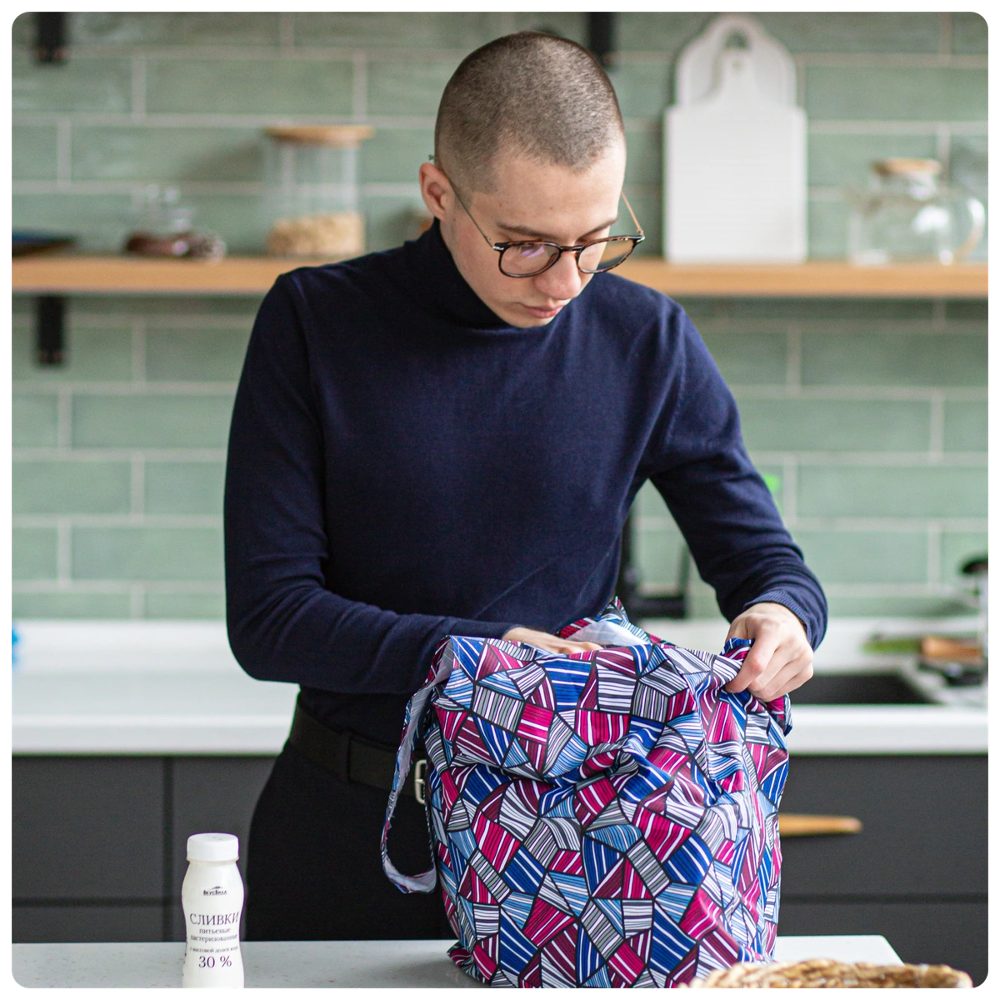
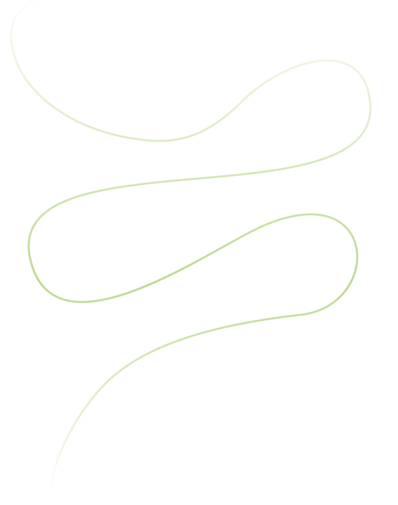
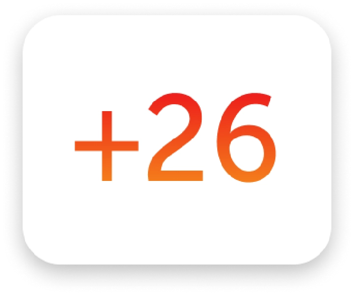
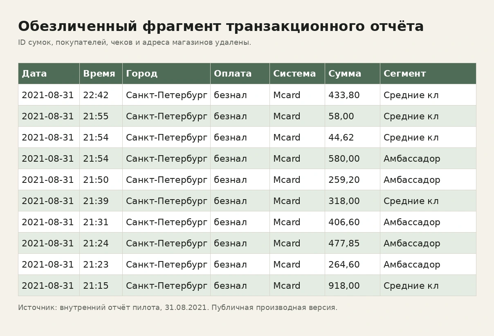
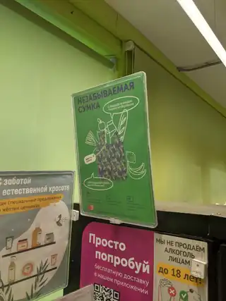

Я определил
- бизнес-задачу;
- пользовательский и кассовый сценарий;
- требования к бонусной логике;
- требования к транзакционному отчёту.
ВкусВилл × Mastercard · Санкт-Петербург · 2020–2021
Я спроектировал механику, которая связала QR-код на сумке, кассу, карту лояльности, бонусы и транзакционные данные.
Так обычное действие в магазине стало измеримым поведением покупателя.

Проблема
Покупатель мог прийти со своей сумкой и отказаться от одноразового пакета. Но компания не получала отдельного сигнала, связанного с конкретным участником программы лояльности.
Без такого события нельзя было видеть повторение поведения, выделять подтверждённый эко-сегмент и проверять релевантные предложения для этой аудитории.
Сквозная механика
Покупатель сканировал QR-код сумки.
Действие связывалось с картой лояльности.
Касса передавала связанное транзакционное событие.
События обрабатывались ночью.
Бонус начислялся на следующий день.
Операция появлялась в транзакционном отчёте.
Действие становилось CRM-сигналом.



Роль автора
Я сформулировал бизнес-задачу, собрал пользовательский и кассовый сценарий, согласовал требования к физическому продукту, бонусам и данным, проверил работу механики и координировал взаимодействие с Mastercard.
Результаты
Пилот подтвердил, что покупатели входили в механику, возвращались с сумкой и создавали измеримые транзакционные события.
Эти данные не доказывают точное сокращение пакетов, рост продаж или прирост частоты относительно контрольной группы.
Ограничения

Карьерный вывод
Я умею превращать поведенческую гипотезу в работающий розничный процесс: соединять физический продукт, кассу, программу лояльности, партнёра и данные; формулировать требования для разных команд; тестировать механику и честно оценивать результат.